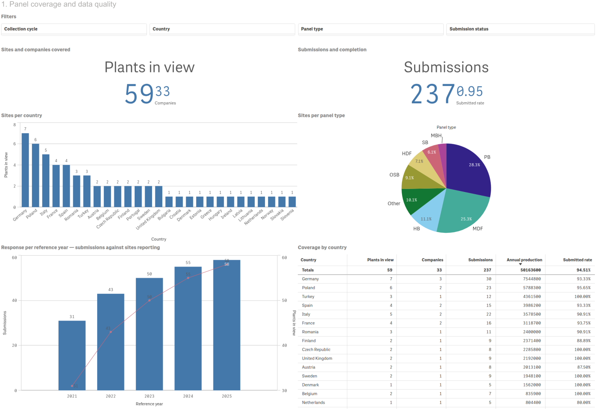

MOVE 01
Sheet 1 · Panel coverage
DoNothing yet. Leave every filter clear.
Establish who is in the room before showing any number

Sites59
Companies33
Countries27
Submitted94%
Representativeness is the first thing a regulator attacks, so it is the first thing the dashboard answers. The coverage table breaks down by country exactly the way EPF's own Annual Report does — sites, companies, submissions, declared production, completion rate.
The bar chart is deliberately uneven: seven sites in Germany, six in Poland, five in Italy, and thirteen countries carrying a single site each. That shape matters. It is where the panel is thin, not where it is thick, that determines what the federation can and cannot claim.
“Before any emission figure, here is precisely how much of the sector is behind it — and where the gaps are.”